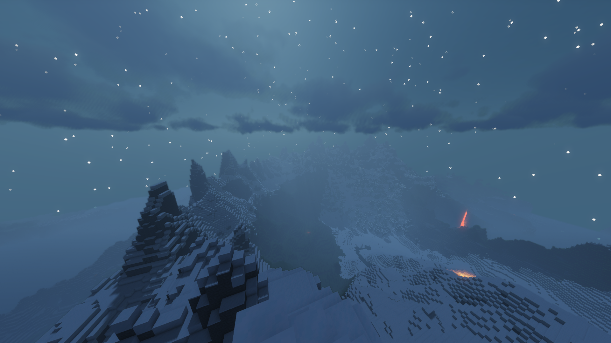
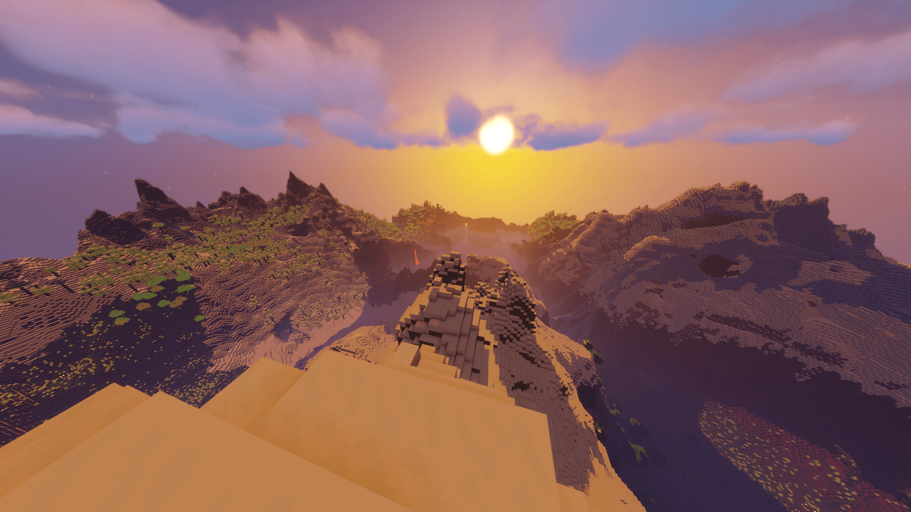

Streamers
All statements are written by the streamers and arent controlled by Catalyst Craft
Welcome to Catalyst Craft, a Minecraft server that is fun and enjoyable for all. You can join at play.catalystcraft.tk
All statements are written by the streamers and arent controlled by Catalyst Craft
Catalyst Craft is a Minecraft server company. We have multible gamemodes and have plans to have full bedrock support and the ability to play in the browser!
Contact Catalyst Craft at help@catalystcraft.tk if you have any questions.
Gl1tch Wizard makes funny edits to videos, including Fortnite and Minecraft. His videos are sure to make you laugh. Go check him out.
If furries want to be animals, then we have the right to hunt them.
NotDJ_Random is a fun and enthusiastic youtuber that enjoys many different games. He also enjoys messing with people, so watch out from him. He is also a admin for Catalyst Craft, so feel free to contact. Make sure to be respectful tho. Wouldn't want you getting banned.
The Slasher is the owner and main developer for Catalyst Craft. He does enjoy streaming on youtube tho. He makes some interesting jokes and welcomes anything to his streams. Have a great day.
A cookie (called an Internet or Web cookie) is the term given to describe a type of message that is given to a Web browser by a Web server. The main purpose of a cookie is to identify users and possibly prepare customized Web pages or to save site login information for you.
When you enter a Web site using cookies, you may be asked to fill out a form providing personal information; like your name, e-mail address, and interests. This information is packaged into a cookie and sent to your Web browser, which then stores the information for later use. The next time you go to the same Web site, your browser will send the cookie to the Web server. The message is sent back to the server each time the browser requests a page from the server.
A Web server has no memory so the hosted Web site you are visiting transfers a cookie file of the browser on your computer’s hard disk so that the Web site can remember who you are and your preferences. This message exchange allows the Web server to use this information to present you with customized Web pages. So, for example, instead of seeing just a generic welcome page you might see a welcome page with your name on it.
Also called a transient cookie, a cookie that is erased when you close the Web browser. The session cookie is stored in temporary memory and is not retained after the browser is closed. Session cookies do not collect information from your computer. They typically will store information in the form of a session identification that does not personally identify the user.
Also called a permanent cookie, or a stored cookie, a cookie that is stored on your hard drive until it expires (persistent cookies are set with expiration dates) or until you delete the cookie. Persistent cookies are used to collect identifying information about the user, such as Web surfing behavior or user preferences for a specific Web site.
For the most part a cookie will contain a string of text that contains information about the browser. To work, a cookie does not need to know where you are from, it only needs to remember your browser. Some Web sites do use cookies to store more personal information about you. However, this can be done only if you yourself have provided the Web site with that personal information. Legitimate Web sites will encrypt this personal information stored in the cookie to prevent unauthorized usage by another party with access to your cookie folder.
Cookies have six parameters that can be passed to them:
Cookies normally do not compromise security, but there is a growing trend of malicious cookies. These types of cookies can be used to store and track your activity online. Cookies that watch your online activity are called malicious or tracking cookies. These are the bad cookies to watch for, because they track you and your surfing habits, over time, to build a profile of your interests. Once that profile contains enough information there is a good chance that your information can be sold to an advertising company who then uses this profile information to target you with interest specific adverts. Many antivirus programs today will flag suspicious spyware or adware cookies when scanning your system for viruses.
Viewing & Removing Cookies
Cookies are stored by the Web browser on your system’s hard drive, and you can view them to see which Web sites that you visit are associated with your cookie files.
If using Internet Explorer, for example you select Tools then choose Internet Options. On the general tab you will see a section titled Browser History. Click Settings then choose View Files.
This will open up a Windows Explorer window that lists all your temporary Internet files, including your cookies. Each cookie will be identified by a site URL making it easy to determine which cookies you trust and want to keep and which you don’t recall from visiting a Web site and would delete.
To change your cookie settings, simply to go back into Tools then choose Internet Options. On the Privacy tab you will see a slider bar which you can move to adjust the level at which your browser accepts cookies. Low for example blocks third-party cookies that do not have a compact privacy policy and restricts third-party cookies that save information that can be used to contact you without your consent. Medium High will do the same but also block first-party cookies that save information about you. Other privacy options you can choose would be to accept all cookies or to block all cookies as well.
When choosing a privacy setting in your browser, two terms you will see are “first-party cookies” and “third-party cookies”. First party cookies are those cookies that originate from (or be sent to) the Web site you’re currently viewing. These types of cookies usually will contain information about your preferences for that particular Web site. These cookies are usually Third-party cookies originate from (or will be sent to) a Web site that is not the site you are visiting. For example, if the Web site you are on using third-party advertising those third-party advertising Web sites may use a cookie to track your Web habits for marketing purposes.
While some may simply choose to block all cookies, it can make Web surfing difficult if you do this. For example if you shop online, many e-commerce shopping carts that have been implemented with cookies will not work. Sites you frequently visit which enable you to personalize content also will not show your preferences when you visit if you delete or disable that cookie.
Most cookies, despite some misconceptions, are legitimate files and will not invade your privacy. Once you get in the habit of reviewing the cookies associated with your browser and manage them on your own by way of deleting malicious cookies or trying different browser privacy settings, you can still keep the good cookies that make surfing a breeze, yet keep the bad cookies that may be tracking your surfing habits off your system.
The name cookie derives from UNIX objects called magic cookies. These are tokens that are attached to a user or program and change depending on the areas entered by the user or program.
Meat Catalyst Craft Survival
Catalyst Craft Survival is plain vanilla minecraft with a twist, featuring skills, claims, and Custom Enderchest. Along with Catalyst Craft Survival being community based, it is high performance and willing to cater to streamers and creators of all kinds.
Please read the rules and make sure to follow them
 If you have any questions please contact help@catalystcraft.tk
© Catalyst Craft
There are 15 skills, each of which has a unique combination of two stats that it rewards. Level up skills by gaining XP by doing certain actions depending on the skill. All skills are easily viewable in GUI inventory menus, accessible using /skills.
| Name | Description |
|---|---|
| Farming | Harvest crops to earn Farming XP |
| Foraging | Cut trees to earn Foraging XP |
| Mining | Mine stone and ores to earn Mining XP |
| Fishing | Catch fish to earn Fishing XP |
| Excavation | Dig with a shovel to earn Excavation XP |
| Archery | Shoot mobs and players with a bow to earn Archery XP |
| Defense | Take damage from entities to earn Defense XP |
| Fighting | Fight mobs with melee weapons to earn Fighting XP |
| Endurance | Walk and run to earn Endurance XP |
| Agility | Jump and take fall damage to earn Agility XP |
| Alchemy | Brew potions to earn Alchemy XP |
| Enchanting | Enchant items and books to earn Enchanting XP |
| Sorcery | Use mana abilities to earn Sorcery XP |
| Healing | Combine and apply books in an anvil to earn Forging XP |
| Forging | Dig with a shovel to earn Excavation XP |
There are 6 stats that buff the player:
| Name | Description |
|---|---|
| Strength | Increases attack damage |
| Health | Increases max health |
| Regeneration | Increases health and mana regen speed |
| Luck | Increases luck attribute and double drop chance for blocks |
| Wisdom | Increases experience gain, max mana, and decreases anvil costs |
| Toughness | Reduces incoming damage |
Abilities are perks and buffs that you unlock and level up as you level up skills. Each skill has up to 5 abilities, giving many different perks. Abilities are passive, meaning they do not require any extra player input to activate or use.
Here are some abilities and their descriptions to give a general idea of what abilities do, there are 70 in total, go in-game to check them out!
| Name | Description |
|---|---|
| Bountiful Harvest (Farming) | Chance to get double drops from crops |
| Shredder (Foraging) | Chance to deal triple durability damage with axes |
| Pick Master (Mining) | Deal more damage with pickaxes |
| Treasure Hunter (Fishing) | Chance to get rare loot from fishing |
| Piercing (Archery) | Chance for arrows to pierce through mobs |
| No Debuff (Defense) | Chance to negative a harmful potion effect from being applied |
| Bleed (Fighting) | Chance to make the enemy bleed, dealing damage every few seconds |
| Meal Steal (Endurance) | Chance to steal 1 hunger point when attacking a player |
| Thunder Fall (Agility) | When sneaking during a fall, you have a chance to deal a percentage of the fall damage expected to mobs in a 3 block radius |
| Alchemist (Alchemy) | Potions you brew have a longer duration |
| Life Steal (Healing) | Heal a percentage of the max HP of hostile mobs and players you kill |
Mana Abilities are a special type of ability that costs mana to use and are active, meaning they require the player to activate or use. By default, mana abilities are unlocked at level 7 of that skill and increase in level every 7 levels. Level increases can change duration/power, cooldown, and mana cost, which are all configurable. Learn more here.
| Name | Description |
|---|---|
| Replenish (Farming) | Replants crops automatically for a certain duration. Right-click with a hoe and break a crop to activate. Works with wheat, carrots, potatoes, nether wart, and beetroot. |
| Treecapitator (Foraging) | Breaks entire trees instantly for a certain duration. Right-click with an axe and break a log to activate. Works best with oak, birch, and spruce trees (One block wide). The algorithm is not final and will be improved later on to work perfectly with all tree types. |
| Speed Mine (Mining) | Gives Haste 10 for a certain duration. Right-click with a pickaxe and break stone or an ore to activate. |
| Sharp Hook (Fishing) | Deal damage to a hooked entity when left-clicking with a fishing rod |
| Terraform (Excavation) | Break blocks instantly in a 4 block radius in the same layer when digging. You must use a shovel and extra blocks broken must be the same type and in a single connected vein. Right click shovel and dig block to activate. |
| Charged Shot (Archery) | Arrows you shoot will deal more damage based on how far the bow was pulled back, consuming mana in the process. Does more damage per mana consumed. Left click a bow to toggle charged shot mode. |
| Absorption (Defense) | Incoming damage will decrease mana by 2x Minecraft damage instead of your health. Mana will not regenerate while Absorption is active. Left click shield and take damage to activate. |
| Lightning Blade (Fighting) | Increases attack speed by _% for _ seconds. Right click sword and attack mob to activate. |
Claim land with this unique greif protection tool. fill up your powercell and keep it supplied to keep your land protected
| Command | Description |
|---|---|
| /c, /claim, /ucl | Displays the information page. |
| /c accept | Allows the user to accept the most recent claim invitation they received. |
| /c claim | Allows the user to claim that chunk that they are currently standing in. |
| /c unclaim | Allows the user to unclaim the chunk they are currently standing in if they are the owner. |
| /c ban (player) | Chance for arrows to pierce through mobs |
| /c unban (player) | Allows the user to unban the targeted player from their claim. |
| /c dissolve | Allows the user to dissolve their claim if they are the owner. |
| /c sethome | Allows the user to set the home spawn of their claim. |
| /c home (claim) | Allows the user to go to the home of one of their claims. |
| /c invite (player) | Potions you brew have a longer duration |
| /c kick (player) | Allows the user to kick the targeted player from their claim. |
| /c leave (claim) | Allows the user to leave the claim they are a member of. |
| /c lock (player) | Allows the user to lock or unlock their claim. |
| /c recipe (player) | Allows the user to view the recipe for creating a powercell. |
| /c name (name) | Allows the user to rename their claim. |
| /c show (player) | Allows the user to enable or disable the visualizer for the claim they are currently standing in. |
Custom Enderchest is a ender chest seperate from the normal enderchest. It is located in the menu and can be upgraded through special event.
Meat Catalyst Craft Hardcore Survival
Catalyst Craft Survival is plain vanilla minecraft with a twist, featuring skills and claims. Along with Catalyst Craft Hardcore Survival being community based, it is high performance and willing to cater to streamers and creators of all kinds.
Please read the rules and make sure to follow them
If you have any questions please contact help@catalystcraft.tk
© Catalyst Craft
| Name | Status |
|---|---|
| Main Server | |
| Lobby | |
| Survival | |
| Survival Hardcore | |
| Name | Description |
|---|---|
| Bountiful Harvest | Increases chance to get extra drops from farming |
| Versatile Tools | Increases damage dealt by pickaxes |
| Increases chance to get rare loot from fishing | |
| Serrated Strikes | Increases chance to cause your opponent to bleed, damaging them repeatedly |
| Seamless Movement | Increases chance to ignore fall damage |
| Potion Master | Brewed potions last longer |
| Shamanism | Increases the speed at which you regain health |
| Craftsmanship | Take less durability damage on axes |
| Second Chance | Chance to instantly fix items on low durability |
| Efficient Brewing | Decreases the time taken to brew potions |
| Mystic Resilience | Increases the chance to ignore negative potion effects |
| Satiation | Decreases the rate at which you lose hunger |
| Golden Yield | Increases the chance to get 5x drops from farming |
| Dodging | Increases chance to ignore incoming damage |
| Accelerated Escape | Go faster after taking damage |
| Bravery | Take less damage from bosses |
| Infernal Resistance | Chance to ignore fire damage |
| Dazzle | Chance to give your opponent nausea |
| Strong Impact | Small chance to deal 3x damage |
| Endangering | Chance to remove your opponents invulnerability frame |
| Spelunking | Chance to get extra drops from ores |
| Dynamic MIning | Chance to get a short burst of Haste III while mining |
| Reimbursement | Chance to get given back xp levels after enchanting an item |
| Overcompensation | Chance to get given back lapis after enchanting |
| Magnetic Rod | Increases fishing speed |
| Master Lumberjack | Increases chance to get extra drops from trees |